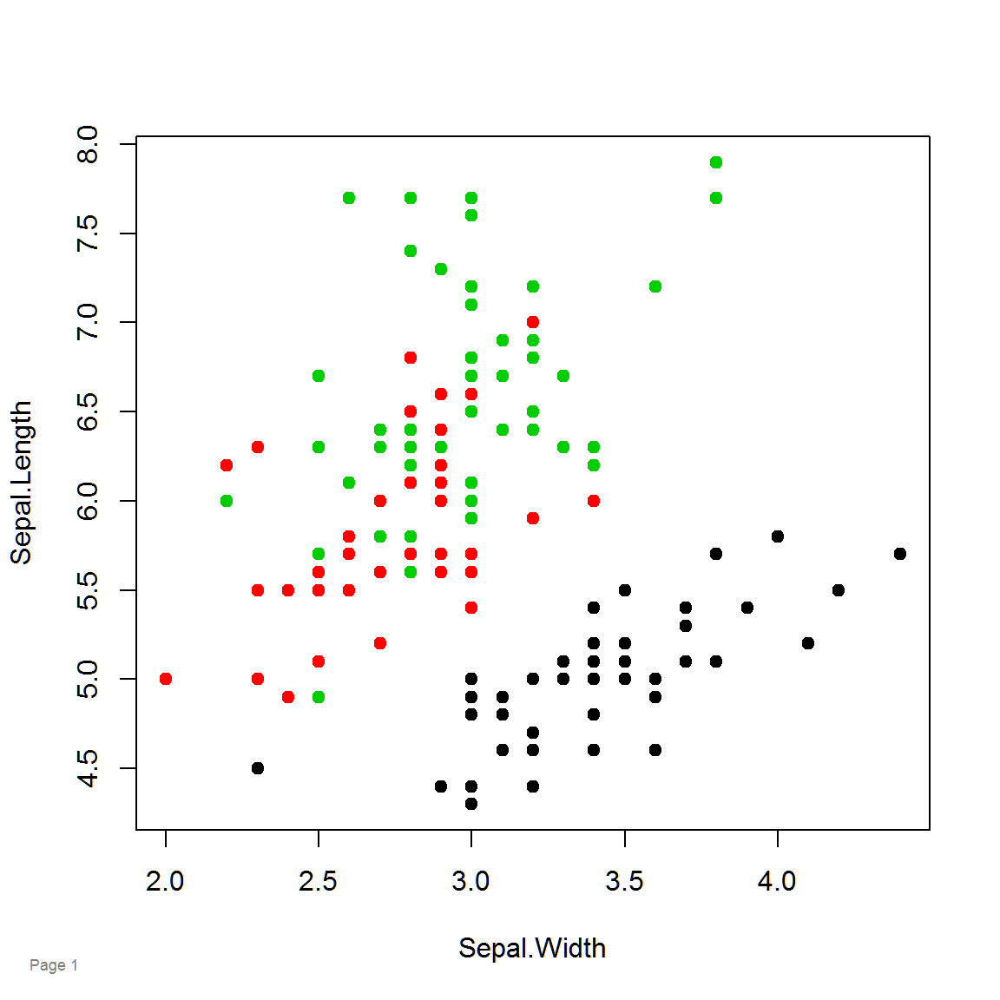

Homepage: https://kwstat.github.io/pagenum
Repository: https://github.com/kwstat/pagenum
This package makes it easy to automatically add a time-stamp and page number to graphics.
Installation
# Install the released version from CRAN:
install.packages("pagenum")
# Install the development version from GitHub:
install.packages("devtools")
devtools::install_github("kwstat/pagenum")Usage
require(pagenum)
setPagenum(1)
plot(Sepal.Length~Sepal.Width, data=iris, col=Species, pch=19)
pagenum()

pagenum